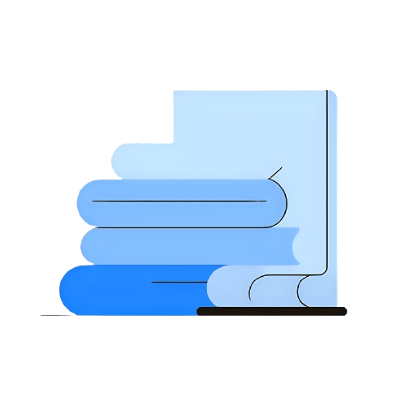

Hi, I'm Jasper.
About Me
I'm Jasper, a 13 year old author, musical artist and data/ML researcher. My core innovations include my latest novel, Dawntasy, which features a fantasy-dystopian world where good and evil are synonyms and the hero is the villain. Besides literature, I have also exhibited interest in composition, especially for instrumental soundtracks, like my latest single, Constellations. My most powerful innovation, my work with machine learning, deep learning and artificial intelligence, involves training LLMs, neural networks and other kinds of models, and writing research papers with the goal in mind to stretch far beyond the Transformer.
Music
Exploring the emotional landscapes of sound through instrumental composition, creating auditory worlds that tell stories without words.
Writing
Crafting intricate narratives and challenging conventions in literature, building worlds where moral ambiguity reigns supreme.
Artificial Intelligence
Pioneering new architectures and paradigms in machine learning to build more efficient, capable, and truly intelligent systems.
A Preview Into My Research
The current paradigm of AI models, in particular, LLMs, are slow and inefficient. The common rule of thumb is that scale = power. Scaling laws state that the more you spend, the more power you get - true in economics and in LLM training. My goal is to research such topics and provide a solution to each of these problems. One of my research projects include BiNLOP, a provably Bi-Lipschitz, stable and efficient activation for deep learning.
Learn More"Linear thinking will get you no where. Nor circular thinking. Now activate it with softmax. Now you are thinking in strategic probabilities, not numbers."
What's happening?
I am currently working on deep learning research and projects. I am training a series of LLMs known as ProbSolSpace ranging from 1B parameters to 100B parameters, with the hopes of achieving SOTA intelligence through a grounded basis on my research proposals. Stay tuned!